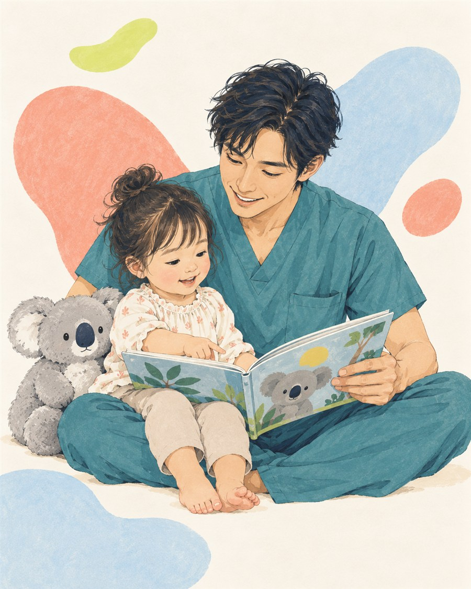

現役脳神経外科医が、論文ベースでの0〜6歳の子育てに役立つ情報を届けます。

不安をあおる断言ではなく、研究でわかっていること・まだわからないことを分けて伝えます。
成長のいまに合うテーマを選んでください。
年齢ごとの変化と、育ちを支える環境。
親子の関係を、発達心理と神経科学から。
眠りの仕組みと、無理のない工夫。
ことばが育つ道筋と声かけのヒント。
好奇心・自己調整・やりぬく力。
研究でわかったことを、今日から使える形でやさしく解説します。
論文ベースの育児情報を、週1回ほどお届けします。